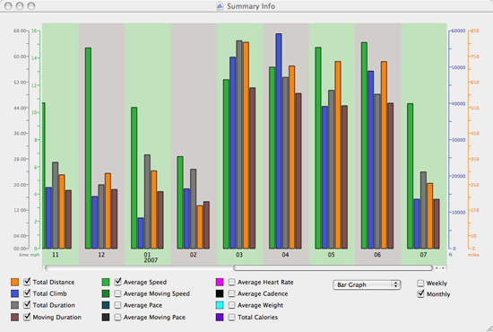

Using the Summary View
The Summary View displays totals and averages of your data in either a scrollable bar or line graph-style display. To show the summary view, open an activity browser window and choose "Summary Info" from the File menu, or type ⌘-I. Data is color coded based on colors set in the preferences. Exactly what is displayed can be controled via check boxes below the graph.
Summary data can be displayed on a weekly or monthly basis by using the radio box controls on the right, and a bar or line graph can be selected using the popup.
